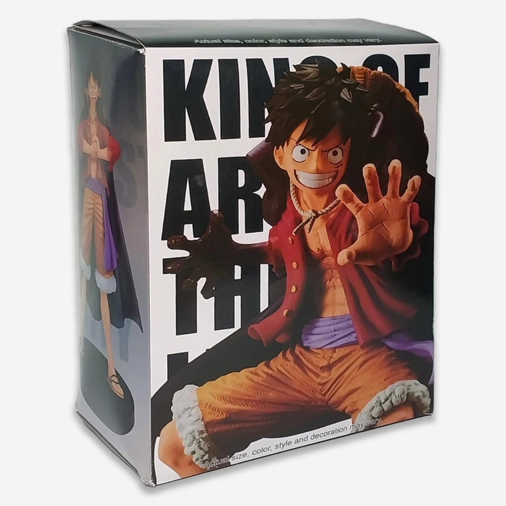
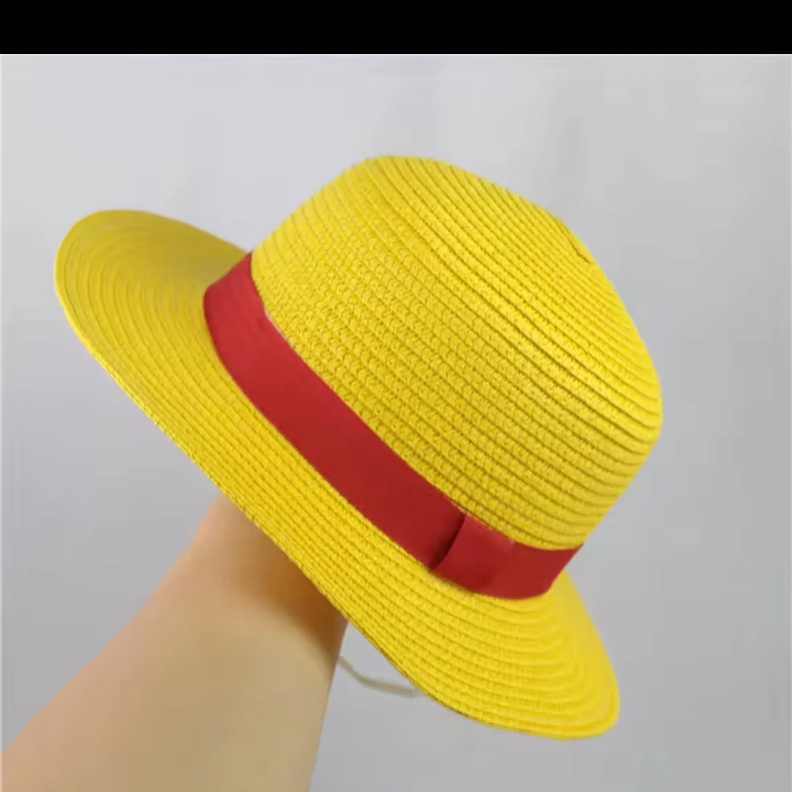
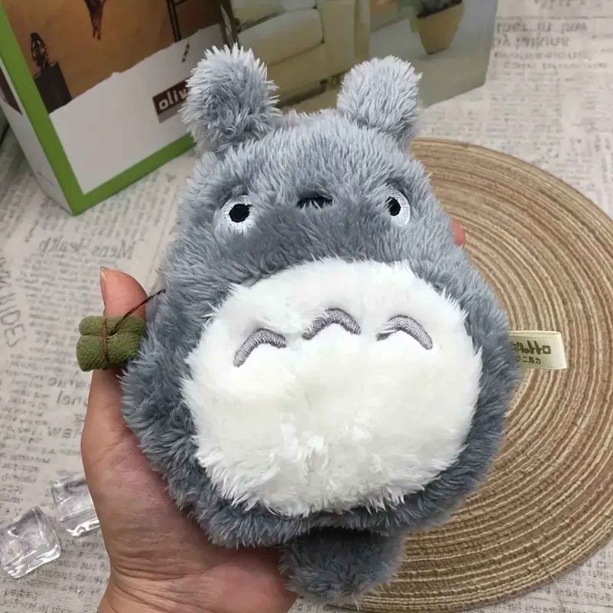

Coleccionables

Elbaf Saga Monkey D. Luffy
Figura de vinilo coleccionable que recrea la transformación más icónica del protagonista de One Piece con detalles de alta fidelidad.
Explora nuestra selección exclusiva de artículos de anime, gaming y coleccionables.

Figura de vinilo coleccionable que recrea la transformación más icónica del protagonista de One Piece con detalles de alta fidelidad.

Sombrero de tela de color amarillo con un liston rojo, similar al que lleva en la serie

Un adorable peluche de Totoro, el amigo de Satsuki y Mei.

Prenda de algodón premium con el patrón bordado de las nubes rojas de la organización Akatsuki de Naruto Shippuden.

Formato compacto 80% ideal para setups competitivos. Cuenta con switches táctiles e iluminación personalizable.

Réplica ornamental de acero al carbono de una de las espadas de Zoro. Excelente acabado en la empuñadura y vaina de madera.